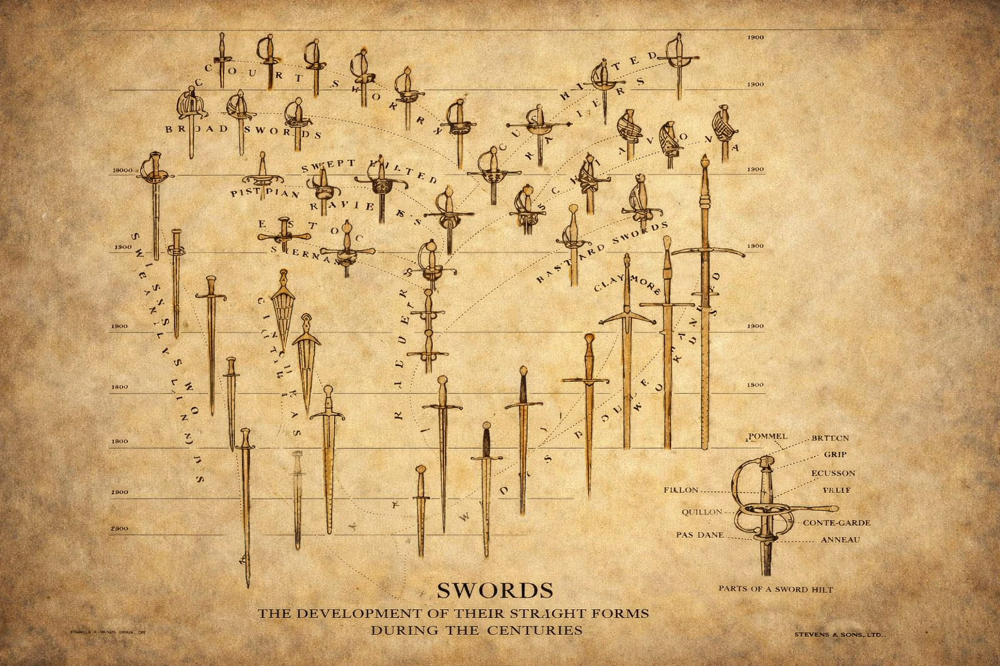
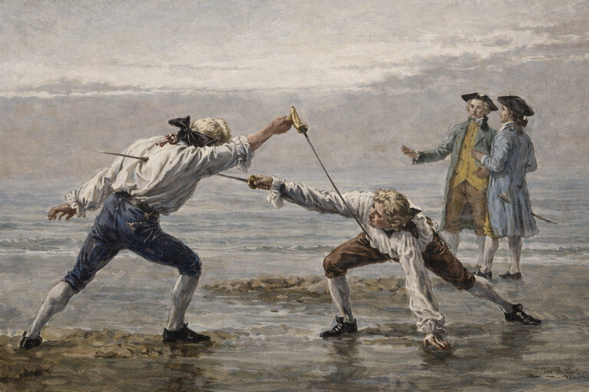

Historical Research & Treatise Study
Exploration of original fencing manuals, military regulations, duel literature, and period writings that form the foundation of authentic European swordsmanship.
A nonprofit organization dedicated to the preservation and study of historical European swordsmanship.
The Historical Sword Society is a nonprofit organization dedicated to the research, preservation, and practice of historical European sword traditions. Our mission is to preserve and advance the knowledge of historical swordsmanship through education, research, and structured training—ensuring these traditions remain accessible to future generations. We combine academic study, historical treatise analysis, and hands-on instruction to better understand how swords were designed, used, and evolved across time.
The Historical Sword Society is a registered 501(c)(3) nonprofit organization. Contributions are tax-deductible as allowed by law and directly support our educational programs, research, and community outreach.
Your support helps the Historical Sword Society expand access to education, preserve historical knowledge, and continue hands-on training rooted in authentic European martial traditions.
The Historical Sword Society is a 501(c)(3) nonprofit organization. No goods or services were provided in exchange for this contribution unless otherwise stated.

Exploration of original fencing manuals, military regulations, duel literature, and period writings that form the foundation of authentic European swordsmanship.

Hands-on instruction in rapier, saber, arming sword, and other historical weapons, focusing on footwork, timing, blade mechanics, and tactical application.
Examination of antique blades, hilts, markings, metallurgy, and historical context to understand the evolution and regional variations of European swords.
Study of forging methods, steel composition, heat treatment, blade geometry, and structural design across centuries.
Understanding the social, military, and artistic roles swords played in European history, including dueling culture, battlefield use, and ceremonial traditions.
Knowledge and best practices for maintaining antique swords, preventing corrosion, identifying safe restoration methods, and preserving historical integrity.
Have questions about our research, training sessions, or membership? We’d love to hear from you. Whether you're a historian, collector, fencer, or simply curious, the Historical Sword Society welcomes all who share a passion for the blade.